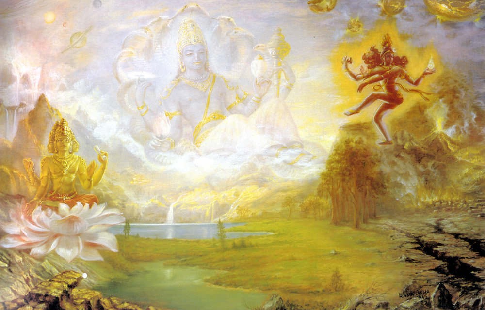

Chapter 4: Pure Devotional Service: The Change in Heart
2.3.1 — Śrī Śukadeva Gosvāmī said: Mahārāja Parīkṣit, as you have inquired from me as to the duty of the intelligent man who is on the threshold of death, so I have answered you.
2.3.2-7 — One who desires to be absorbed in the impersonal brahmajyoti effulgence should worship the master of the Vedas [Lord Brahmā or Bṛhaspati, the learned priest], one who desires powerful sex should worship the heavenly King, Indra, and one who desires good progeny should worship the great progenitors called the Prajāpatis. One who desires good fortune should worship Durgādevī, the superintendent of the material world. One desiring to be very powerful should worship fire, and one who aspires only after money should worship the Vasus. One should worship the Rudra incarnations of Lord Śiva if he wants to be a great hero. One who wants a large stock of grains should worship Aditi. One who desires to attain the heavenly planets should worship the sons of Aditi. One who desires a worldly kingdom should worship Viśvadeva, and one who wants to be popular with the general mass of population should worship the Sādhya demigod. One who desires a long span of life should worship the demigods known as the Aśvinī-kumāras, and a person desiring a strongly built body should worship the earth. One who desires stability in his post should worship the horizon and the earth combined. One who desires to be beautiful should worship the beautiful residents of the Gandharva planet, and one who desires a good wife should worship the Apsarās and the Urvaśī society girls of the heavenly kingdom. One who desires domination over others should worship Lord Brahmā, the head of the universe. One who desires tangible fame should worship the Personality of Godhead, and one who desires a good bank balance should worship the demigod Varuṇa. If one desires to be a greatly learned man he should worship Lord Śiva, and if one desires a good marital relation he should worship the chaste goddess Umā, the wife of Lord Śiva.

2.3.8 — One should worship Lord Viṣṇu or His devotee for spiritual advancement in knowledge, and for protection of heredity and advancement of a dynasty one should worship the various demigods.
2.3.9 — One who desires domination over a kingdom or an empire should worship the Manus. One who desires victory over an enemy should worship the demons, and one who desires sense gratification should worship the moon. But one who desires nothing of material enjoyment should worship the Supreme Personality of Godhead.
2.3.10 — A person who has broader intelligence, whether he be full of all material desire, without any material desire, or desiring liberation, must by all means worship the supreme whole, the Personality of Godhead.
2.3.11 — All the different kinds of worshipers of multidemigods can attain the highest perfectional benediction, which is spontaneous attraction unflinchingly fixed upon the Supreme Personality of Godhead, only by the association of the pure devotee of the Lord.
2.3.12 — Transcendental knowledge in relation with the Supreme Lord Hari is knowledge resulting in the complete suspension of the waves and whirlpools of the material modes. Such knowledge is self-satisfying due to its being free from material attachment, and being transcendental it is approved by authorities. Who could fail to be attracted?
2.3.13 — Śaunaka said: The son of Vyāsadeva, Śrīla Śukadeva Gosvāmī, was a highly learned sage and was able to describe things in a poetic manner. What did Mahārāja Parīkṣit again inquire from him after hearing all that he had said?
2.3.14 — O learned Sūta Gosvāmī! Please continue to explain such topics to us because we are all eager to hear. Besides that, topics which result in the discussion of the Lord Hari should certainly be discussed in the assembly of devotees.
2.3.15 — Mahārāja Parīkṣit, the grandson of the Pāṇḍavas, was from his very childhood a great devotee of the Lord. Even while playing with dolls, he used to worship Lord Kṛṣṇa by imitating the worship of the family Deity.
2.3.16 — Śukadeva Gosvāmī, the son of Vyāsadeva, was also full in transcendental knowledge and was a great devotee of Lord Kṛṣṇa, son of Vasudeva. So there must have been discussion of Lord Kṛṣṇa, who is glorified by great philosophers and in the company of great devotees.
2.3.17 — Both by rising and by setting, the sun decreases the duration of life of everyone, except one who utilizes the time by discussing topics of the all-good Personality of Godhead.
2.3.18 — Do the trees not live? Do the bellows of the blacksmith not breathe? All around us, do the beasts not eat and discharge semen?
2.3.19 — Men who are like dogs, hogs, camels and asses praise those men who never listen to the transcendental pastimes of Lord Śrī Kṛṣṇa, the deliverer from evils.
2.3.20 — One who has not listened to the messages about the prowess and marvelous acts of the Personality of Godhead and has not sung or chanted loudly the worthy songs about the Lord is to be considered to possess earholes like the holes of snakes and a tongue like the tongue of a frog.
2.3.21 — The upper portion of the body, though crowned with a silk turban, is only a heavy burden if not bowed down before the Personality of Godhead who can award mukti [freedom]. And the hands, though decorated with glittering bangles, are like those of a dead man if not engaged in the service of the Personality of Godhead Hari.
2.3.22 — The eyes which do not look at the symbolic representations of the Personality of Godhead Viṣṇu [His forms, name, quality, etc.] are like those printed on the plumes of the peacock, and the legs which do not move to the holy places [where the Lord is remembered] are considered to be like tree trunks.
2.3.23 — The person who has not at any time received the dust of the feet of the Lord’s pure devotee upon his head is certainly a dead body. And the person who has never experienced the aroma of the tulasī leaves from the lotus feet of the Lord is also a dead body, although breathing.
2.3.24 — Certainly that heart is steel-framed which, in spite of one’s chanting the holy name of the Lord with concentration, does not change when ecstasy takes place, tears fill the eyes and the hairs stand on end.
2.3.25 — O Sūta Gosvāmī, your words are pleasing to our minds. Please therefore explain this to us as it was spoken by the great devotee Śukadeva Gosvāmī, who is very expert in transcendental knowledge, and who spoke to Mahārāja Parīkṣit upon being asked.